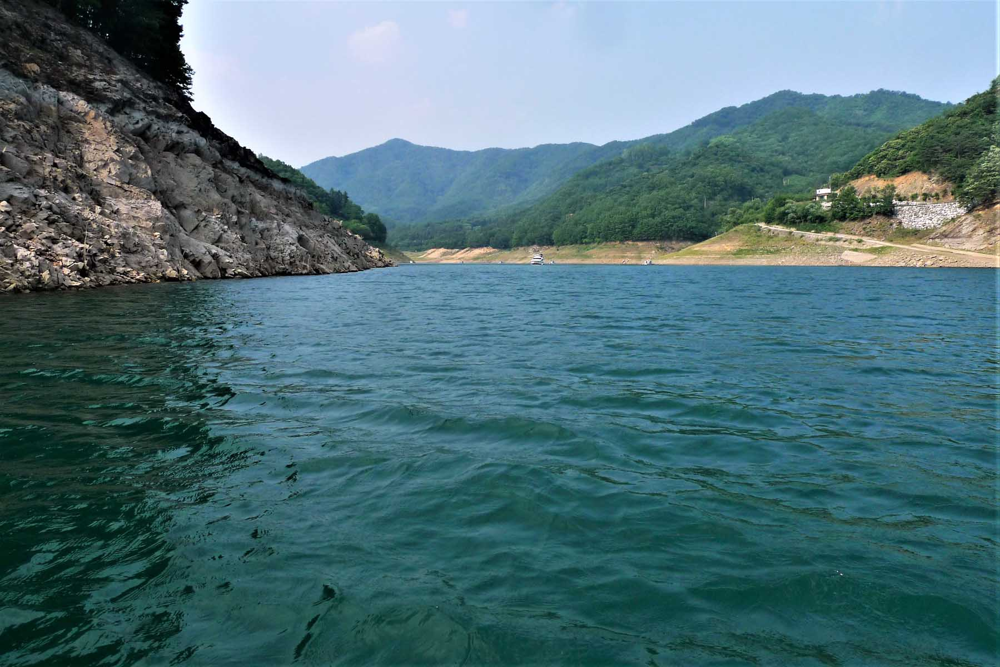

June 19-22, 2017
This was the first canoe trip on a lake in Korea. The reason for a trip on the lake was the fact that Korea was in a
drought year with little water having fallen for at least six months and the rivers were very low. We chose this lake
because it is the largest lake in South Korea and known to be one of the most beautiful lakes in Korea as well. It also
has a national park, Woraksan (월악산국립공원) along its shore and is in a relatively remote area of the country.
We met at KAIST, loaded all the gear and put the canoe onto the car. It was a sunny warm day with no rain in the
forecast for the next week. We had already arranged to stay at a commercial camping area that included bathrooms, a
little store and a cement road down to the lake. It also featured uniquely Korean fishing cabins floating on the lake.
These are rented by the day or week and consist of a bedroom and a small platform from which one can do the fishing.
Campsite
While camping if you needed food, you called to the shore and they would come out and deliver the food to you. Each
cabin also had a small “potty” that sufficed as a toilet. To clean or shower one just reached into the lake and splashed
water on yourself. We arrived at the camping area around 10 a.m., soon had the tent up and site organized. We were the
only campers at the location and had the site all to ourselves for the duration of the trip. Later, I found out through
a Korean friend that because of the drought, people felt they should not go on pleasure trips. One should not enjoy
oneself when others, especially the farmers, are in difficulty was the accepted thinking.
Land exploration
We had expected the lake to be low but still we were amazed at just how low it was. In normal times the lake would be
almost at the edge of the camp sites. But with no rain in months, the distance down the boat ramp to the lake was almost
a quarter of a kilometer. After setting up the tent and unloading our gear, we drove down the ramp, removed the canoe
from the car roof and carried the canoe to the lake far below. Soon we were on the lake and exploring the immediate
location. Our campsite was located in a small inlet that was deeply cut into the side of a small mountain. It was
obvious to see the usual level of the lake was by the lack of vegetation below that level. It looked like the water
level was about eight meters below the usual level.
Special meal
After this initial exploration of the lake we returned to the campsite and cooked dinner. My partner for this trip,
Danial Saakes, was from Holland and had brought a smoker so we had a special meal that evening. We then explored the
land area. It was obvious that this camping site had required a great deal of excavation and building of rock walls as
the nature of the area was very steep slopes with no level parcels of land. We retired early that evening as there would
be a full day ahead of us.
Water quality concerns
The next day Tuesday June 20th, 2017 we were up early and cooked the breakfast, went down and loaded the canoe with
another tent, sleeping bags and food for an overnight stay somewhere far from civilization. This would give us a chance
to explore the far reaches of the lake. What really impressed us was all the land that was exposed that would normally
have been under water. One could see where there had once been houses, graves, stone walls and other evidence of
civilization that had been removed when the water rose after the completion of the dam. We also explored an inlet where
stairs lead up to a group of buildings that would usually be rented out for summer outings. It was interesting to see
these locations as they were all empty. But it also gave us a chance to replenish our water supply. We could have used
the lake for this but we preferred well water and with the lake so low, we did not know how that had affected the water
quality. We also sat on one of the porches and had a nice lunch out from under the sun. The location also had a nice
breeze and a fine view of the lake far below.
Tiger noise
That night we camped on a small peninsula that had a narrow neck connected to the lake edge. It had usually been covered
with water and therefore was barren of vegetation. The main challenge was all the rocks that had to be removed to make
it a good location to sleep. We were outside of the tent admiring the serenity of the location when there came from the
nearby woods this horrible screeching sound. I was really scared as it sounded like a tiger. We waited silently
listening for a long time and finally the sound ascended up the hill into the forest beyond. Danial had recorded the
sound and later he found out that it was a type of common Korean deer.
Wednesday June 21st
The next morning Wednesday June 21th, 2017, we took down our temporary camp site, loaded the canoe and continued
exploring the far reaches of the lake. We also explored the area where the dam was located. The dam was really
impressive when one is up close to the wall. It towers far above the lake and this is accentuated by the low water.
Looking closely one can see all the past levels of the lake etched on the concrete. We then returned to the original
campsite and carried the canoe up to the car as tomorrow we will be packing up to leave.
Thursday June 22nd
The morning of Thursday June 22nd, 2017, was a busy time to gather up all our gear and clean the camp site. You could also
see the rock wall that was built to make a flat area for the campsites. There really was not a flat location alongside
this area of the lake. We were a few hours later back at Daejeon unloading in the afternoon.
Comments about Lake Canoeing

Canoeing on a lake is much different than travelling on a river. First you do not need to spot the car as you come back
to the same location every day. But a lake can become very dangerous very fast if a storm comes up when far out on the
water. Also if you do not have your camping gear, it can be a problem if the storm lasts some time. On a river you are
always near the shore unless you are at the estuary of the river where the river becomes very wide. A strong wind can be
a problem on a river or a lake but more so on a lake because you must return to your campsite unless you have camping
gear with you. When travelling on a river all the gear is always in the canoe and therefore you can set up your camping
location when the weather is unfavorable.